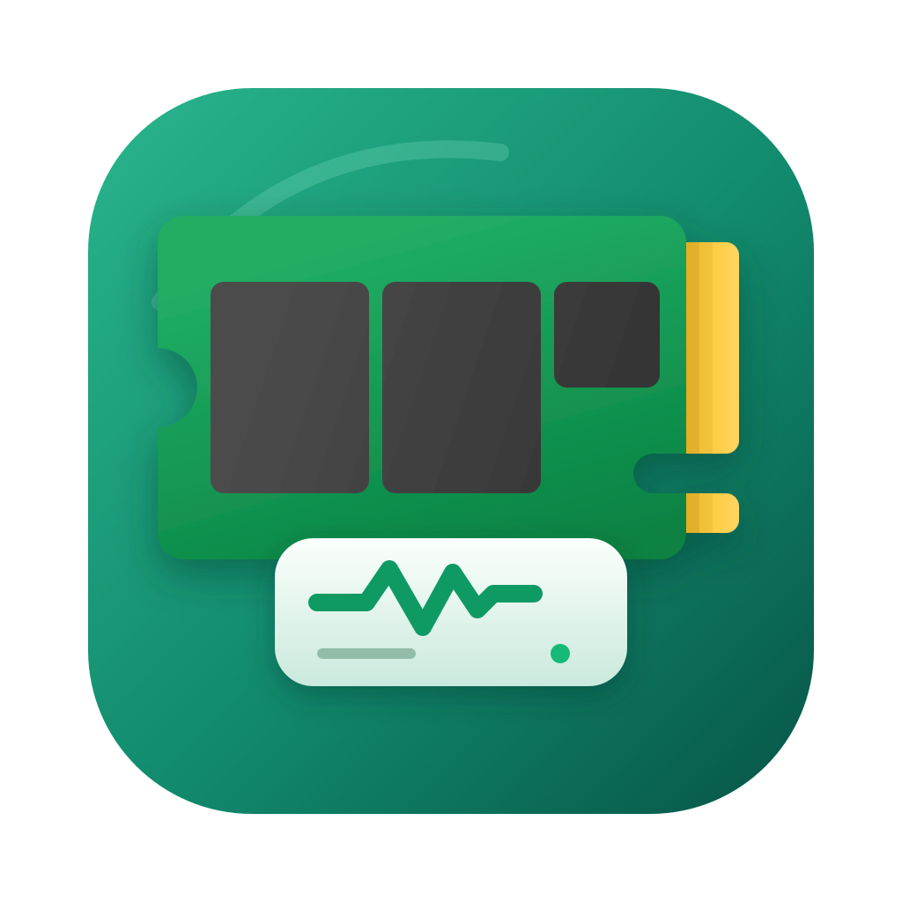
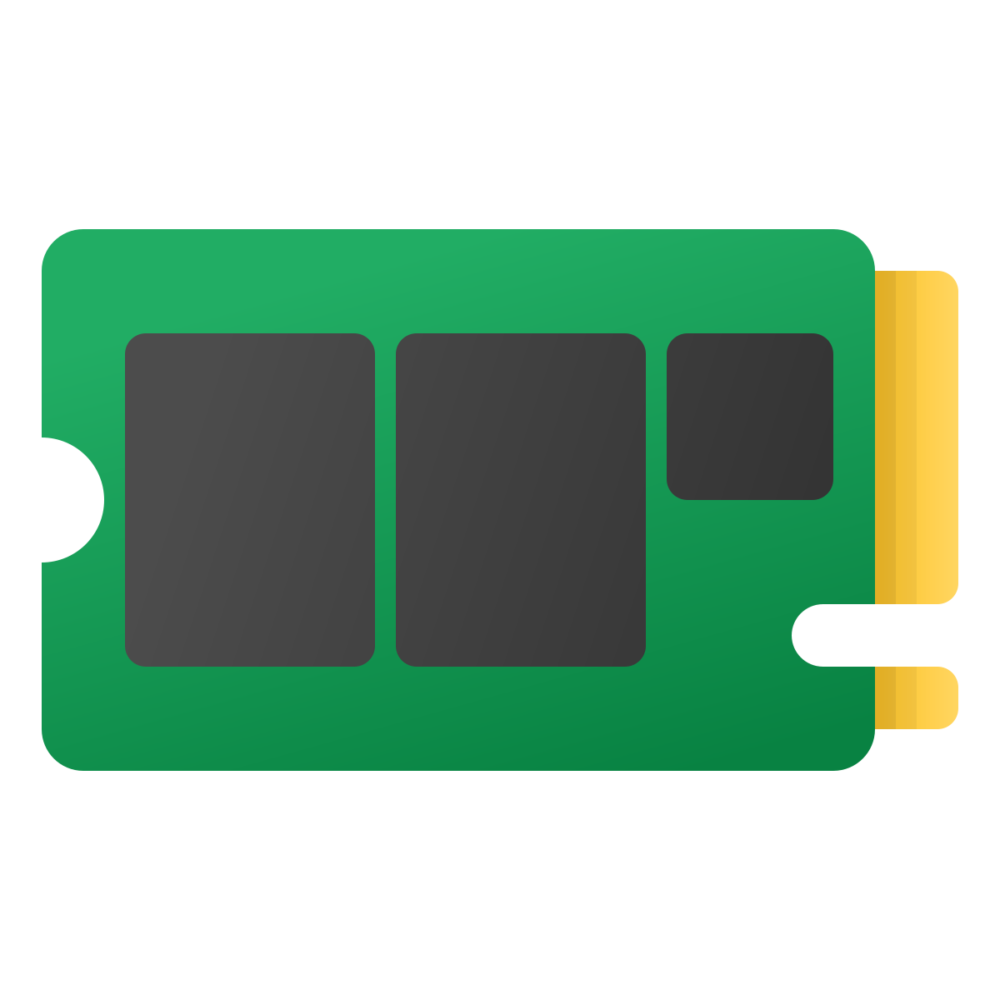

The Icons8 fluent M.2 SSD as the hero, vertically centered on the Clinical Readout tile (teal gradient + arc highlight), with its readout card (EKG, measurement line, LED) in front.


Green PCB, dark chips, notched edge, gold connector fingers — the storage cue you picked.
Teal gradient tile, arc highlight, white case, dark screen with EKG chart, plus-stamp — the concept it’s combined with.